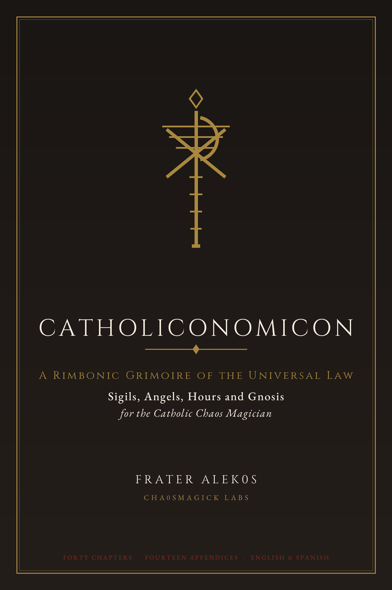

Somewhere in the occult revival there appears a table with columns for saint, planet, metal, number and gemstone, and it is presented as though it were ancient. It is not. Knowing where it comes from is what makes it usable, because a construction you can source is a construction you can test, and a construction you cannot source is just an assertion.
Where the correspondences sit in the library
Natural magic before correspondences
The earliest layer is late antique and early medieval natural magic: Pliny's Naturalis Historia, the Herbarium of Pseudo-Apuleius, Dioscorides. These describe the properties of stones, plants and substances, and they do not distinguish between physical efficacy and symbolic. A stone described as protective is recorded as protective, and no one asks whether that is chemistry.
Gábor Klaniczay's survey of ritual and belief in Byzantine and Western magic is the useful reference for how this material was organised, and it makes one point clearly: the medieval category of the arcana and the modern category of "correspondence" are not identical, and reading modern tables backwards onto medieval manuscripts distorts them.
The doctrine of signatures
The signature doctrine reads form as indication. Something resembling what it is for is taken as a sign of what it is for. This is the assumption underneath most of the resulting tables, and it is worth naming because it is an assumption, not an observation.
Saints enter through patronage and iconography
A saint acquires attributes. Saint Blaise's throat because he was tortured with irons, Saint Andrew's cross because of his martyrdom, Saint Catherine's wheel, Saint Joseph's carpenter's tools. Compilers like the Legenda Aurea assemble these, and painters repeat them until the association is widely known.
Once an attribute is widespread, it becomes available for a correspondence table. That is the actual mechanism, and it has nothing to do with theology.
Building the table
Start small and cite everything
Eight entries, each with a source you can point at. For each saint: the feast day, the attribute they carry in art, the patronage, and then separately, marked as your own inference rather than as source, any symbolic quality you want to work with.
That separation is the whole technique. Columns that say "source" and columns that say "my reading" should never be merged, because merging them is how a Renaissance construction turns into an apparent doctrine.
Time the operation to something real
Planetary hours and the association of days with planets come from a coherent medieval system that you can learn in an afternoon. It has the advantage of being checkable: you can verify the day, and you can record the hour. A correspondence you can verify is worth more than one you cannot.
Put this into practice
Use the attribute as the symbol, not the name
For a working table, the drawn symbol is more useful than the saint's name. The wheel is a usable image in a diagram. The name is a label. When you build a sigil, you are working with shapes and order, so work from the shape.
One operation, one correspondence
Do not stack meanings. A sigil that carries a saint, a planet, a metal, a number and an intention has five claims on it and no way to tell which is doing work. Use the correspondence to choose the timing and the material, and let the intention be the only thing in the glyph.
Log it
Date, saint, attributed source, symbol used, intention stated, outcome. After a year of that you will have an honest record of what your method does, which is more than any published table offers you.
References
- Catholic Church. Roman Rite, section "Preparation for the Renunciation of Satan and Reparation for Sin".
- Catholic Church. Catechism of the Catholic Church, 2nd ed., Libreria Editrice Vaticana.
- Jung, C. G. (1951). Aion: Researches into the Phenomenology of the Self. Princeton University Press.
- Sherwin, Susan (2010). Western Esotericism and the Making of the Modern World. Oxford University Press.
- Klaniczay, Gábor (2010). Ritual and Belief in Byzantine and Western Magic. Brepols.
- Spare, Austin Osman (1997). Austin Osman Spare: The Golden Bough and Other Writings. Kegan Paul International.
- Carroll, Peter (2004). Liber Null and Psychonaut. Hermetic Press / Phoenix.
- Carroll, Peter (2003). The Octopus and the Elephant: A Study in Comparative Occultism. Pentacle Books.
- Lachman, Gary (2007). The Culture of New Age. Watkins Media.
- Wilson, Robert Anton (1996). Prometheus Rising. IlHP Books.
- Anonymous (1604). The Book of the Law. Skelton Press / F. T. clandestine printings.